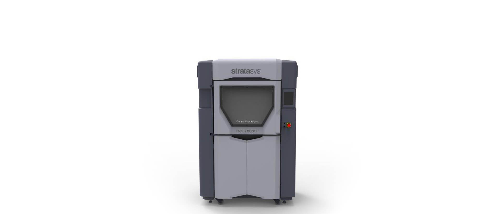

Fortus 380CF
カーボン繊維で充填された複合材料に対応した3Dプリンタ
Fortusシリーズの操作性・安定性・生産性の良さに加え、新たに軽量かつ耐久性の高いカーボン繊維素材に特化したカーボンファイバー専用3Dプリンタです。
モデル材料は、FDM-Nylon12CF、ASAの二つの材料が使用できます。Fortusシリーズに搭載されている高機能ソフトウェアInsightは、サポート材の構造設計やヘッドの造形パス、スライスデータを自動生成することで、Fortusで高精度な3Dモデルを製造するための準備をします。また、ユーザーは、モデルの用途によって造形パスを手動で自由に編集することが可能で強度や精度をさらにアップさせた実用的な製品を作成することが出来ます。
| Fortus 380CF | ||
|---|---|---|
| 積層ピッチ（Z軸） | 127μm / 178μm / 254μm / 330μm ※FDM-Nylon12CF使用時は、254μmのみ対応 | |
| 造形サイズ | (X)355mm×(Y)305mm×(Z)305mm | |
| ヘッドスピード | 7.5inch/s | |
| モデル材 | 耐候性、耐熱性、高耐久性樹脂 | ASA |
| 高強度、耐疲労性 | FDM-Nylon12CF | |
| サポート材 | SR20・SR30・SR35・SR100・SR110（溶解性サポート材） | |
| 材料カートリッジ数/容量 | モデル材用×1、サポート材用×1 | |
| 制御ソフトウェア | Insight（トレイデータ作成、パス編集機能）、GrabCAD Print（自動トレイ配置、スライスデータ作成） | |
| 電源電圧 | 三相 AC208V / 20A、50/60Hz ※20Aの専用回路が必要です。 | |
| 本体寸法/重量 | (W)1,270mm×(D)901mm×(H)1,943mm / 601kg | |
| オプション | UPS、変圧器、サポート除去装置、マテリアルオプション | |